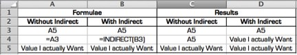

Get in touch!


There was an interesting Excel problem I encountered a while back which I thought I would share as the solution ended up being quite well received and even got me a nice Swiss dinner.
The problem arose out of a reasonably common scenario - a friend of mine had begun working in a new workplace where they had been using a MS Word template to collect the results of survey they had been undertaking. Being more of a data focused person, she managed to convince them to migrate the template to MS Excel as this would allow easier aggregation and analysis of the data. However, in convincing them to migrate, she had to design the Excel template in a manner more or less mirroring the Word template, which meant merged cells, data in various columns and rows on the spreadsheet, and generally no easy way to tabulate the data across multiple surveys.
After the surveys starting coming in from various areas and she had spent an inordinate amount of time manually copying and pasting the results into a table, she asked me if there was a better way to do this.
After a couple of false starts, I came to a point where I thought the only way to do this was going to be a macro. The issues with using a macro are:
Asides from those issues, non-technical people tend to get a little squeamish around macros.
I ended up stumbling across this solution almost by pure chance as I happened to be doing something at work that resulted in me using an Excel function that I hadn't used very often: INDIRECT. What INDIRECT does is takes any string (either typed directly into the formula, referenced from another cell, or some combination of both) and tries to read it as a cell reference.
For example - if you type "A3" into a cell, then reference that cell ("=A1" for example), the result will be that both the original cell and the cell with the reference will now read "A3". But what if you wanted the cell referencing the original cell to actually use the value in that cell as a reference to look up a third value in cell A3? That is where INDIRECT comes in:
In this simple example we have used it to reference a cell in the same sheet, but we can also use INDIRECT to build a reference to a different sheet or workbook. And that's where this is going. All the templates were the same - the same cell reference for each data point every time - but the name of the sheet (or workbook if they haven't been added together yet) was always different. So what if we use an INDIRECT formula to dynamically look up the name of the sheet, which the user inputs? We can then use that value to complete the cell references for all the cells looking up the information on that sheet. Here is an example of what that would look like:
Once you have the basic formula working there are 3 steps left:
Once this is done, users of the workbook will be able to move a completed template into this workbook, enter the sheet name in the table, and all the results should immediately populate in the table. No Macros, no mess, and a convenient and simple way to convert information from an irregularly formatted template into tabular data.
Still confused? Please feel free to download this example file: